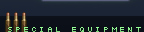
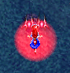

このたびは 瞬殺サレ道？ のゲームを手にとっていただき、まことにありがとうございます。
このマニュアルには、西方Ｐｒｏｊｅｃｔ 第３弾「幡紫竜 〜ばんしりゅう〜」の操作方法や諸注意などの、ゲームに関する情報をまとめて記してありますので、プレイされる前に一度サクッと目を通して下さるようお願いします。
※マニュアル中のショートカットアイコンのショートカットアイコンが付いている部分はインターネット上のＨＰなどへのショートカットになっています。
パワープラント・ＲｅｄＳｔｏｒｍ
火星探索において、局所的・短時間に発生する嵐の中心部で発見された
鉱石を用いて行うエネルギー発生装置。
鉱石自体を地球に持ち込もうとすると何故か制御が失敗するため
火星にて応用しやすいエネルギーに変換、地表に転送している。現在はまだ試験段階。
クリーンで効率的な新エネルギーの開発。
技術が進めば、その技術を最高に活かすためにとより高いエネルギーを欲する。
かつて、技術面において高い評価を得た発明家・エーリッヒの名は
ＲｅｄＳｔｏｒｍの発見によってさらに高みを見いだしたかのように…思えた。
半年間、安定を見せていたＲｅｄＳｔｏｒｍ計画。
しかしある日、なんの前触れもなくそれらは暴走をはじめる…ただ一つの例外を除いて。
「ＶＩＶＩＴ−ｒ、待機状態を解除。システム、異常なし。
…はい、ご主人様、私は問題無しですよ。今度はなんの御用ですか？
…はい、了解しました。直ちに向かいます」
そして、物語の始まりの地へ。
以下は、 あくまでも目安です。
動かない場合は、実行環境を報告していただけると対応できるかもしれません。
| OS | Windows 2000/XP (Windows 95/98/Me で動作は保証できません)
Vista は一応動作するようです. |
|---|
| メモリ | 512MB 以上 |
|---|
| CPU | Pentium M - 900 MHz 相当 |
|---|
| ビデオチップ |
動作確認済みのもの (○:問題なく動作, △:処理落ち少々)
○: ATI Radeon X1600
○: NVIDIA Geforce 6600GT
△: Intel GMA 950
|
| DirextX | 8以降(それ以前では動作しません) |
|---|
その他、あると幸せになれるかもしれないもの
| サウンドカード | DirectSound に対応したもの
無くても動作します |
|---|
| パッド | DirectInput に対応したもの
ボタンが４つ以上付いているもの
振動に対応 |
|---|
ドライバは、最新の安定版ドライバが当たっていること
ファイル一式をハードディスクにコピー後、このマニュアルが読めていれば大丈夫です。
幡紫竜.exe をダブルクリックすれば起動します
初回起動時は設定ダイアログが開きますので, 必要に応じて変更を行ってください
処理が重たいな、と感じる場合は
設定ダイアログの以下の項目にチェックを入れることで改善できるかもしれません
- テクスチャメモリをケチる
- 表示色が少なくても我慢する(フルスクリーン時有効)
- フォグを無効化する
- 綺麗に拡大縮小しない
フルスクリーン時、
液晶の縦横比の都合でメイドさんがふとましい、と感じる場合は
以下の項目にチェックを入れることで対応できることもあります
- ウィンドウモードで起動する
- 仮想フルスクリーン(非推奨)
(モニタを２つ以上使用している場合はうまくいかないかもしれません.おまけ程度の機能ということで)
刺激が足りないな、と感じる場合は
難易度を Lunatic に変更する他、以下の項目にチェックを入れると良いでしょう
幡紫竜はレジストリ等を使用しませんので、ディレクトリごと削除してください
ゲーム中に作成されるファイルは以下の通り
- 設定ファイルは bsr.cfg
- ステージクリア情報は bsr.sco (C73 以降)
- 実行ログはbsr.log
- リプレイデータは replay ディレクトリ内にあります
- 画面のキャプチャは capture ディレクトリ内にあります
キーボードとパッドが (あれば) 使用できます
| キーボード | パッド (*1) |
|---|
| 自機の操作 | ↑↓←→
テンキー８２４６、７９１３ | パッドの上下左右 |
|---|
ショット
決定 | Ｚ | ２ |
|---|
Ｓ.Ｅ(ボンバー)使用
キャンセル | Ｘ | ０ |
|---|
| 低速移動・ウエポン切替 | 左・ＳＨＩＦＴ | ６ |
|---|
| ポーズ/キャンセル | ＥＳＣ | ９ |
|---|
| スクリーンキャプチャ (*2) | Ｆ１２ | - |
|---|
| 終了 | Ａｌｔ＋Ｆ４ | - |
|---|
| フルスクリーン・ウィンドウ切替 | Ａｌｔ＋Ｒｅｔｕｒｎ | - |
|---|
(*1) 表内の数字は初期設定値
パッドを使用される場合は、初回起動時に表示されるダイアログ、
もしくは bsrcfg.exe をダブルクリックして起動してください
(*2) capture ディレクトリが作成され、その中に日付付き連番ファイルが作成されます
各機体には２種類のショットが装備されており、一部の例外を除き
テクニカルモード
(SHIFT解放中) |
前方に高威力のショットが放たれる.
ショットを放たなければ、移動速度が上昇します.
|
オートモード
(SHIFT 押下中) |
移動速度が低下する.
敵を自動追従するショットが放たれる.
時々、あんまり賢くない動きをするので過剰な期待は禁物 |
|
といった特徴があります
テクニカルモード中は、自機周囲に黒いフィールドが展開され、カスり判定が大幅に拡大します

画面左下に表示される弾アイコンの数だけ強力な攻撃 ( Ｓ．Ｅ - Special Equipment) を放つことができます.
ボタンを押下し続けることで、連続使用が可能です.
ボスにも容赦なく有効で、Ｓ．Ｅ に接触した敵弾は、一部の例外を除き 消滅してしまいます.
いわゆる「ボンバー (ボム)」ですが、全弾消し・無敵等の要素は無いので、緊急回避にはあまり使えません
決めうちして、苦手な箇所を力押しで乗り切りましょう
得点アイテムを大量に集めるか、ボムアイテムを拾うことで使用回数が回復します
・Ｓ．Ｅを発射するとごくわずかに敵がビビっておとなしくなります

敵に接触すると、ガードブレイクとなり残機が減ることはありませんが、
一時的にＳ．Ｅが発射できなくなってしまいます
自機周囲に赤い円が表示されている間だけＳ．Ｅが無効となります.
アイテムは以下の３種類があります.
取ることでプレイに悪影響の出るアイテムはありません. きっと.
| 得点アイテム | |
アイテム発生時の「基本点 (*1)」がアイテムの得点になります
大量に取得すると、Ｓ．Ｅの使用回数が増えます
(左上に表示される個数分). |
| ボンバー | |
Ｓ．Ｅの使用回数が１回増えます |
| １ＵＰ | |
残機が１つ増えます(右上ハート) |
得点アイテムは以下の条件で自動回収されます
- 敵に十分接近して破壊
- アイテムが画面内に表示されている間に敵弾にオートモードでカスる
- ガードブレイクする
(*1) 基本点とは
- アイテムが自動回収できるぐらいに敵に接近して、倒すことで上昇します
- 右上に出ている＋１００とかいう数字がソレです
- 最後にアイテム回収してから時間が経過すると、急激に減少します
- たくましい敵を倒すと、大幅に上昇することが多いです
- 基本点は１００００まで上昇します
色気のない自機紹介.
Vivit-r
ワイドメイド |
・広範囲をサポートするワイドショットが使いやすい.
・Ｓ．Ｅ は左右キーで進行方向制御が可能.
|
Vivit-r
レーザーメイド |
・レーザーは敵によっては貫通可能. 大きな敵、堅そうな敵は貫通不可.
・Ｓ．Ｅ 中は移動速度が大幅に低下.
|
桜崎 比良野
弓巫女 |
・中央集中の矢は攻撃力が高めだが、小型敵へのダメージ効率が少々悪い.
・Ｓ．Ｅ の乱射札は、威力はきわめて低いが画面上ほぼ全ての敵弾を消滅させられる.
|
桜崎 比良野
炎巫女 |
・近接特化型の機体. 少々扱いが難しい.
・ＳＨＩＦＴキーで高速移動になる
・オートモードは円内の的をロック. １体のみロックしたときは強力な攻撃となる
・Ｓ．Ｅ は敵弾消しの範囲が広く、緊急回避に使える.
|